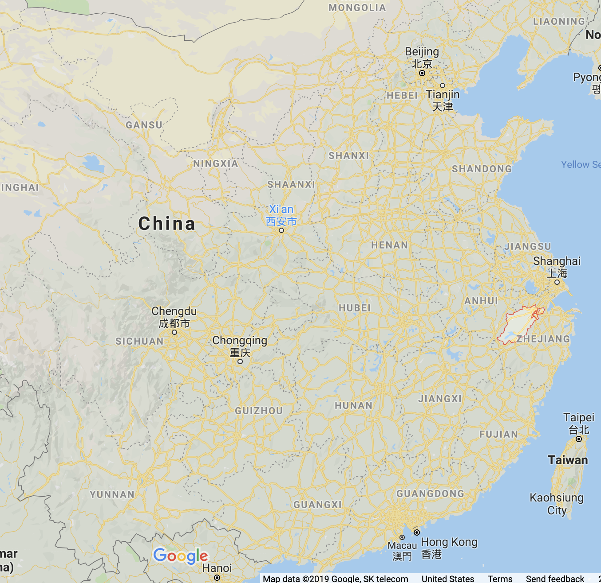

Warriors, Lovers, and Adventurers
September 9th
Questions from Last Time
Class Wiki
Blackboard Groups for Sign Up
Four Slots Per Week.
Weeks 2 and 3 articles due September 18
Intro to Wiki
How to Read the Sanguo
The Action So Far
The Battle of Red Cliffs
https://upload.wikimedia.org/wikipedia/commons/5/51/Chibi.jpg
Su Shi's Red Cliffs

The First ode on the Red Cliffs
Chapter 46
Chapter 49
Open Discussion